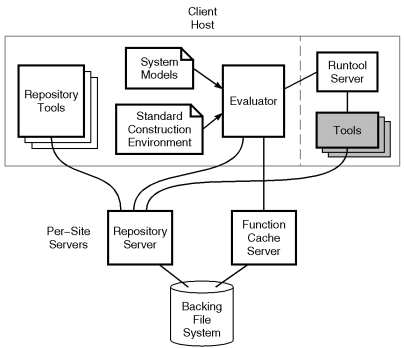
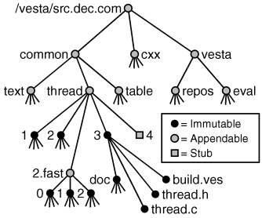
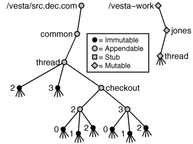
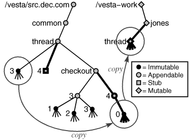
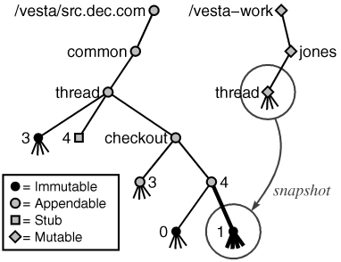
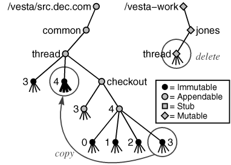
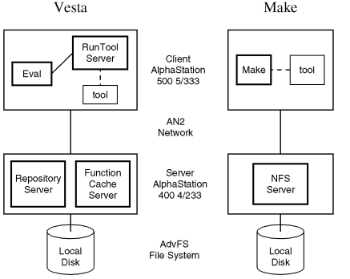

SRC Technical Note
1999-001
June 22, 1999
The Vesta Approach to
Software Configuration Management

Systems Research Center
130 Lytton Avenue
Palo Alto, CA 94301
http://www.research.digital.com/SRC/
Copyright 1999 Compaq Computer Corporation. All rights reserved
Abstract
Vesta is a system for software configuration management. It stores
collections of source files, keeps track of which versions of which
files go together, and automates the process of building a complete
software artifact from its component pieces. Vesta's novel approach
gives it three important properties not available in other systems.
First, every build is repeatable, because its component sources
and build tools are stored immutably and immortally, and its
configuration description completely describes what components and
tools are used and how they are put together. Second, every build is
incremental, because results of previous builds are cached and
reused. Third, every build is consistent, because all build
dependencies are automatically captured and recorded, so that a cached
result from a previous build is reused only when doing so is certain
to be correct. In addition, Vesta's flexible language for writing
configuration descriptions makes it easy to describe large software
configurations in a modular fashion and to create variant
configurations by customizing build parameters. This paper describes
Vesta's advantages over traditional tools, how those benefits are
achieved, and the system's overall performance.
1. Introduction
This paper describes Vesta, a software configuration management (SCM)
system for managing and building software, from small systems to very
large ones (tens of millions of lines of source code).
Vesta addresses the following four core SCM problems:
Version management. Version management is the process of
assigning names (typically sequential numbers) to a series of related
source files and supporting retrieval of those files by name. Machine
generated, or derived files, are also versioned by some SCM
systems.
Source control. Source control is the process of
controlling or regulating the production of new versions of source
files. Operations commonly associated with source control include
checkout and checkin, which respectively reserve a new
version and supply the data for a previously reserved version. Source
control may be coupled with concurrency control as well, so that
checking out a particular version limits the ability of other users to
check out related versions.
System modeling. A system model is both a static
description of a system's configuration and a recipe for producing
a software artifact. It names the (versions of) software components
that are to be combined to produce larger components or entire
systems, names the tools that are to be used to combine them, and
specifies how the tools are to be applied. System models are also
sometimes called configuration descriptions.
Building. Building is the process of evaluating a system
model so as to construct a complete system according to the model's
instructions. Building may also include other activities, such as
running regression tests on the resulting artifact.
Version management, source control, system modeling, and building are
four parts of the larger SCM problem. Considered broadly, SCM is often
taken to include such areas as process management, software life-cycle
management (e.g., bug tracking, testing), and even the specific tools
used to develop and evolve software components. We hold the view that
these aspects of SCM, although important to the overall software
development process, are secondary to the core issues listed above. We
have therefore focused the Vesta project on solving those core
problems, constructing a solid base upon which we believe solutions to
the other problems can be built.
Some form of SCM is almost always a necessary part of software
development. SCM is useful whenever multiple source files, multiple
developers, or multiple releases and/or target platforms are involved.
Moreover, the larger the number of source files, developers, or
releases, the larger the configuration management problem.
A good SCM system can greatly reduce these problems. Version
management can ease the problem of managing multiple source
files by keeping related versions of files together. Source control
can help multiple developers work productively in parallel. Together,
system modeling and building can help manage multiple releases by
accurately selecting the right sources to use for each release and by
automatically managing derived files.
However, several difficulties stand in the way of designing and
implementing an SCM system that addresses these problems. First,
handling large-scale software is difficult, because it usually
involves large numbers of source files and developers. Unlike other
SCM systems in use today, Vesta was specifically designed to handle
very large projects---millions of lines of code and beyond. The rapid
growth of today's software makes this an even more pressing problem.
Second, with larger numbers of developers comes the need to support
parallel development across sites that are often geographically
separated, which introduces the problem of keeping replicated copies
consistent. Finally, for building to be efficient, it must work
incrementally, re-using the results of previous builds whenever
possible. However, when multiple versions, multiple target platforms,
and multiple releases are involved, sound incremental building is a
non-trivial problem.
The rest of the paper is organized as follows. We first consider
the strengths and weaknesses of several widely-used SCM systems.
Section 3 then describes the Vesta approach, focusing on the main
ideas in the Vesta system and the benefits they provide. In Section 4,
we then describe how those ideas are realized in practice, with an
emphasis on the user's view of the system. Finally, we describe the
performance of our Vesta prototype in Section 5, and in Section 6, we
offer our conclusions from our experiences using the system.
2. Previous Approaches
In this section, we review related work by assessing several popular
SCM systems. Some systems, like the Revision Control System (RCS) and
the Concurrent Version System (CVS) address only version management
and source control, while others like Make address only system
modeling and building. We also consider ClearCASE, which provides a
more integrated solution to the core SCM problems.
2.1. RCS and CVS
RCS is a system for maintaining multiple versions of individual
files [10, 11]. Its main
strengths are that it is easy to use, well-understood, and
well-documented. Its main disadvantages are two. First, it does not
provide transparent access to individual file versions. That is, an
explicit checkout step is required to access an older version of a
file. Hence, to build an older version of a system, the developer must
first explicitly check out the correct versions of each source file
required by the build. Second, sources are versioned at the
granularity of individual files. Although RCS provides tagging
facilities for grouping related files, those facilities are awkward to
use.
Like RCS, CVS is relatively easy to use and well-supported [4]. It also suffers RCS's problem of not allowing
transparent access to file versions. However, unlike RCS, CVS allows
related files to be grouped together into modules. CVS also
includes an optimistic concurrency control methodology that allows
multiple developers to work on the same file concurrently.
However, allowing concurrent modifications is not without its costs,
since conflicting edits must be detected and resolved. CVS's conflict
detection is simple-minded (i.e., purely line based), so semantic
conflicts between changes in disjoint lines may go undetected. When
conflicts occur, they must be resolved manually, which can be a
time-consuming process.
2.2. Make
Make is a widely-used tool for building software [2]. It is easy to use and the syntax of its system
models (i.e., Makefiles) is simple, if somewhat cryptic. Moreover,
Make can also be used for tasks other than building software, such as
running regression tests.
However, there are several major problems with the Make approach to
software construction. In this approach, dependencies between derived
files and the inputs used to produce them must be specified explicitly
by the user, and Make relies on timestamps to decide when it is safe
to re-use a derived file in a subsequent build. A build based on
incorrect dependency information or incorrect timestamps can produce
an inconsistent result, in which parts of the resulting system
incorrectly include stale derived files. Inconsistent builds can
produce programs that fail to link or run, or that exhibit bizarre,
unexplainable bugs. Developers often must resort to performing a
scratch build to correct such problems.
Inconsistent builds are not uncommon in Make. Specifying dependencies
explicitly is an inherently error-prone task. There are tools such as
makedepend for generating certain kinds of dependencies automatically,
but again, such tools must be run by hand, so they may not be run as
often as necessary. Another problem is that some dependencies are
inexpressible or too costly to express. For example, dependencies on
the values of environment variables cannot be expressed in Make, and
dependencies on the Makefile itself are too costly because they would
result in a scratch build whenever the Makefile was changed. Make's
use of timestamps is also problematic [3]. For
example, when building a system from older sources, Make may
incorrectly conclude that the system is up-to-date because the
timestamps associated with the older file versions are in the past;
again, a scratch build is often the developer's only recourse in such
situations.
Finally, Make scales poorly. Make does its dependency analysis from
the leaves of the ``build tree'', working its way up to the final
result. Hence, the cost of an incremental build in Make is
proportional to the total number of sources contributing to the build,
not the number of sources that have changed. Moreover, although it is
possible to structure a software system hierarchically by arranging
for Make to invoke itself recursively on sub-components, doing so is
awkward and performs poorly, so it is not frequently done in practice.
2.3. ClearCASE
Perhaps the biggest problem with the systems discussed so far is that
they are not integrated. Building a particular version of a system
requires two steps: checking out the correct versions of the sources,
and then building them. As described previously, the first build of an
older version must be performed from scratch, since Make does not have
any knowledge about which versions it is building, so it cannot tell
when it is safe to re-use a derived file from a different build.
ClearCASE is a commercial SCM system that integrates version
management with building, and that addresses many of Make's
shortcomings [1]. It is based on many of the
ideas in the earlier DOMAIN Software Engineering Environment (DSEE)
system [8, 7].
Unlike RCS and CVS, ClearCASE provides transparent access to older
file versions. However, older versions are almost never accessed
directly in practice. Instead, a ClearCASE view is used to
transparently map an unversioned file name to a versioned one. The
rules governing a view can be specified in a variety of ways, and they
include provisions for always accessing the latest version of a file.
For building, ClearCASE provides its own version of Make called
clearmake. The advantage to this approach is that developers do
not have to learn a new system modeling language, and their existing
Makefiles continue to work. Unlike Make, clearmake does automatic
(although somewhat incomplete) dependency detection by monitoring and
recording the files accessed during a build. It also manages derived
files for potential later re-use.
There are several problems with ClearCASE. The problem with the view
approach to version management is that the meaning of a name can
change over time. In particular, the actions taken by someone
else can cause one's own build to suddenly fail. This shortcoming is
an impediment to effective parallel development. There are also
problems with the clearmake builder. First , because clearmake is
Make-based, it suffers from the same scalability problems as Make.
Second, because its dependency detection is incomplete, clearmake can
produce inconsistent builds. Third, clearmake's mechanism for allowing
developers to re-use the derived files produced by others --- called
winking in --- is based on heuristics that can fail to
capitalize on valid re-use opportunities. Finally, anecdotal evidence
suggests that the overheads introduced by clearmake are large, so some
development organizations choose to use ordinary Make for improved
performance, despite Make's shortcomings.
3. The Vesta Approach
As described earlier, Vesta's goals are to address the core SCM
problems of version management, source control, system modeling, and
building. It provides a firm technical base on which solutions to the
other SCM problems can be built. Vesta is also explicitly designed to
scale up to large code bases, which means it must also effectively
support parallel development. Of course, it must be an open system
that works with standard development tools. Finally, it must
perform well and be easy to use.
The Vesta approach is based on the following foundations:
-
Immutable, immortal, and versioned storage
of all sources and tools. Unlike ClearCASE, Vesta uses explicit
version numbers rather than views.
-
Complete, source-based configuration descriptions.
By complete we mean that the descriptions name all elements
contributing to a build, and no build depends on any aspect of the
computing environment (e.g., tools, libraries, header files,
environment variables) outside of Vesta's control1. By source-based we mean that
configuration descriptions describe how to build a system from scratch
from sources (i.e., non-derived files). Hence, the descriptions do not
rely on templates, search paths, or other rules for their meaning and
function.
-
Automatic dependency detection. All dependencies are detected
and recorded automatically by the Vesta builder, so no dependency
errors can be introduced by human error2.
-
Automatic derived file management. The storage and naming of
derived files is managed automatically by the Vesta storage
repository, thereby easing the burden of building multiple releases or
building for multiple target platforms.
-
Site-wide caching of all build work. Vesta features a shared
site-wide cache of build results so developers can benefit from each
others' builds.
At this point, the reader may well be wondering what it is like to
use Vesta in practice. How can any sources be edited if all sources
are stored immutably? If system models must name the version of every
source file, isn't the overhead of maintaining those references
overwhelming? We address these questions and other practical aspects
of using Vesta in Section 4 below.
We first point out that these foundations provide several valuable
benefits:
Repeatable builds. The immutability and immortality of
sources combined with the completeness of build descriptions together
mean that every Vesta build is repeatable. That is, any build
performed in the past can be exactly reproduced at any time in the
future.
Incremental builds. Although the system models describe
how to build a software system from scratch, the Vesta builder uses
the site-wide cache of previous builds to avoid work, so good
incremental build performance is the norm. The time required to
perform an incremental build is generally proportional to the amount
of work to be done, not to the size of the system being built.
Consistent builds. Because every build is conceptually
performed from scratch, and because Vesta's automatic dependency
detection means that a cached result is used only when it is correct
to do so, all Vesta builds are guaranteed to produce consistent results.
Hence, there is never any need to do ``nightly'' or scratch builds to
correct for an errant build in which a stale derived file was used.
Parallel development. Several features of the Vesta system
enable parallel development. For one, the Vesta repository supports
version branching and partial replication across geographically
distributed sites. But perhaps more important is the fact that a user
must take explicit action to build with a newer version of someone
else's code. Hence, it is impossible for one developer's action to
break another's build. This feature allows developers to work
productively in isolation.
The entire Vesta system was designed and implemented with an eye
toward scalability. Our design goal was to support systems containing
20 million lines of code or more. This emphasis is visible in several
respects. To organize the construction of large-scale software, system
models can be arranged as a modular hierarchy. During a build, caching
is done top-down rather than bottom up. Hence, cache hits often occur
on larger units of work than individual tool invocations, such as the
construction of an entire library or collection of libraries. This
top-down caching avoids the scalability problem of incremental builds
suffered by Make. Finally, because each user's checked out files are
managed by the repository, the repository can arrange to make checkout
and checkin almost instantaneous, thereby eliminating one of the
burdens of working with large source trees.
4. A User's View of Vesta
The discussion so far has been fairly abstract. In this section, we
provide a user's view of Vesta to make the ideas more concrete. We
start by describing Vesta's components. We then consider Vesta's
source control tools and their effects on the repository.
Finally, we present some sample system models to give a sense for
Vesta's system modeling language.
4.1. Vesta Components
Figure 1 shows the main components of the Vesta system.

Figure 1: Vesta's main components.
The bottom half of the figure shows the repository and
function cache servers. One instance of each server is run at
each site. The repository server manages the storage of both sources
and derived files. It provides both a standard NFS interface to
sources, and a remote procedure call (RPC) interface that is used by
other Vesta tools. The function cache server stores the results of
previous builds. Both servers use a normal file system for backing
storage.
The top half of Figure 1 shows the Vesta components run on each
client host. The main client programs are the repository tools
and the evaluator. The repository tools provide checkout,
checkin, and other source control operations. The evaluator is the
Vesta builder. It reads user-written system models and a set of
system-supplied models comprising the standard construction
environment. Not shown in the figure are standard development
tools such as text editors and the like, which can be used to access
sources via the repository's NFS interface in the usual way.
During a build, the evaluator will often be called on to run an external
tool like a compiler or linker. To do so, the evaluator makes a remote
procedure call to a runtool server process. As indicated by the
dashed line in the figure, the runtool server may or may not be
running on the same client host as the evaluator. Decoupling the
runtool server from the evaluator allows tools to be invoked on
different machine platforms (e.g, for cross development), or even for
multiple clients to use the same runtool server running on a more
powerful machine.
Before it contacts the runtool server to launch a tool, the evaluator
calls the repository to create a special directory tree in which the
tool will be run. The runtool server then launches the tool in an
encapsulated environment that causes all of the tool's file references
to go to this tree, where they are trapped and reported back to the
evaluator. The evaluator records these references as dependencies.
During the build, the evaluator also contacts the function cache
server to determine if each piece of the build it is about to execute
has been performed before (either by the same person or someone else).
If so (a cache hit), the function cache returns the correct
result. If not (a cache miss), the evaluator performs the work
and then calls the cache to create a new cache entry for possible
re-use in the future.
Figure 1 omits several administrative tools. Among these is a tool
called the weeder that is used to delete unwanted derived files
from the repository and unwanted cache entries from the function
cache. The weeder reads a description file that says which build
versions should be kept; it then uses a mark-and-sweep garbage
collection algorithm to identify all derived files and cache entries
that are safe to delete. The description file uses a simple but
powerful pattern language; such rules as ``keep builds of the last two
versions'' are easily expressed.
Parameterizing the weeder with an explicit instruction file gives each
organization the flexibility to keep the builds it considers
important. Of course, deciding what to weed is simply a time-space
tradeoff. Even if a useful build is accidentally left out of the weeder
instructions and deleted, Vesta's repeatability guarantees that it can
be reproduced, albeit more slowly, and re-cached.
4.2. Repository Operations
The Vesta repository is a general-purpose file system with special
support for immutability. As mentioned earlier, it exports both an NFS
interface (with some minor restrictions) and an RPC interface. The
repository also manages a site-wide pool of derived files.
The repository's main job is to provide directory trees; the files
themselves are stored in a normal Unix file system. In particular, the
repository supports three kinds of directories: mutable,
immutable, and appendable. The purposes of these three
directory types will become apparent momentarily.
It is worth noting that the repository naming conventions we describe
next are imposed not by the repository server, but by the much smaller
client-side repository tools. This separation of concerns is important
because it means that different source control paradigms (such as a more
concurrent paradigm like that of CVS) could be implemented simply by
rewriting the repository tools; changes to the repository proper would not
be required.

Figure 2: Naming conventions assumed by the Vesta repository tools.
Figure 2 illustrates several aspects of the naming conventions
engendered by our current repository tools:
-
Related sources are grouped into arbitrary directory trees
called packages. Versioning is done at the package granularity.
As shown in version 3 of the common/thread package, each package
version may contain arbitrary files and nested directories.
-
To accommodate large-scale software, the package namespace is
hierarchical. For example, the packages of Figure 2 are arranged in a
two-level hierarchy, with package names like common/thread
and vesta/repos.
-
Version numbers appear as explicit pathname arcs. For example,
version 3 of the common/thread package is named
common/thread/3.
-
The root directory of each package version is immutable. Hence,
the contents of a package version cannot be changed. The directories
that form the package hierarchy, such as common and
common/thread, are appendable. The only operation allowed on
such directories is the insertion of new items, such as new packages
or package versions.
-
Branches are like sub-packages. Hence, all the operations on
packages apply to branches as well. In Figure 2, the branch
common/thread/2.fast has three versions named 0,
1, and 2, the former of which will typically be a
copy of common/thread/2.
As shown in Figure 3, the repository exports two NFS file systems,
which are made visible to the client through two mount points,
typically named /vesta and /vesta-work. The
directory tree rooted at /vesta consists only of appendable
and immutable directories, while the one rooted at
/vesta-work is mutable. There is a mutable directory in
/vesta-work for each user, and edits are performed in
subtrees of those directories.

Figure 3: The checkout session of the common/thread package.
In addition to version directories and branch directories, each
package also contains a directory named checkout. This directory
contains an appendable directory for each checkout session, each of
which contains a separate, immutable snapshot of a package version
each time the package is built. Hence, Vesta keeps a version of each
package not only across checkout sessions, but during checkout
sessions as well.
The typical development cycle is as follows.
- Check out the package using vcheckout
- Modify the package:
- Edit using your favorite text editor
- Advance the package using vadvance
- Build the package using vesta
- Test
- Repeat as necessary
- Check in the package using vcheckin
The outer level consists of three steps: check out the package
using vcheckout, modify it, and check it back in using
vcheckin. The inner loop of the development cycle is the
familiar edit-compile-test loop, but with an extra wrinkle. Recall
that Vesta's repeatability guarantee requires that all builds are
performed against immutable sources. Therefore, before invoking the
vesta builder, an immutable copy of the user's current sources
must first be made using a tool called vadvance3. We now describe these
tools and their effect on the repository.
Figure 4 shows the effect of running the command vcheckout
common/thread. In this figure and the next two, bold lines denote
newly created elements. Assuming that the latest version of the
common/thread package was version 3, this command would first
create a special element called a stub named
common/thread/4. The stub reserves a name under which the
package will be checked back in; attempting to check out the package
again will fail because a stub for version 4 already exists. Next, the
new appendable directory common/thread/checkout/4 is created,
and the latest version of the package is copied into that checkout
directory as checkout version 0. Finally, a mutable copy of the
package is made in the user's working directory under
/vesta-work.

Figure 4: The effects of vcheckout common/thread.
Files in the working directory may then be freely edited. Before
building them, the user invokes vadvance. As shown in Figure 5,
vadvance simply creates an immutable snapshot of the working
directory in the appropriate part of the package's checkout directory.
Builds are then performed using these immutable sources.

Figure 5: The effects of vadvance.
Finally, once the user is satisfied with the state of the package,
vcheckin is used to check the package back into the main line
of the package version space. As shown in Figure 6, vcheckin
replaces the previously created version stub by the latest sub-version
of the checkout session, and deletes the user's working version of the
package from /vesta-work.

Figure 6: The effects of vcheckin.
4.3. System Modeling Language
We now consider typical client system descriptions. A complete
discussion of Vesta's system modeling language is well beyond the
scope of this paper, but its complete syntax and semantics are defined
in a separate paper [5]. Here, we will try to
motivate and describe the language's main features.
Across different development organizations, there is a rather wide
variation in build processes, including the size and scope of the
systems being built, the structure and methodology of the
organization, and the degree of parameterization required. Vesta
therefore supports varied descriptions through a general-purpose
language that supports abstraction. Abstraction permits the
construction of extensions that adapt the language to each
organization's development methodology. As a proof of concept, we have
built one fairly comprehensive extension called the standard
construction environment.
The system modeling language itself is a full-fledged functional
programming language with a C-like syntax. The functional nature of
the language is important, since each function call represents a unit
of work appropriate for caching. The language uses strong, dynamic
typing, which is to say that the run-time types of arguments to all
built-in operations are checked for correctness. The language is
methodology neutral. The main aspect of the language that is
specialized for software construction is a primitive to run external
tools like compilers and linkers in an encapsulated environment (i.e.,
to invoke the runtool server of Figure 1). The language also includes
an import statement that encourages modular build
descriptions and thereby supports hierarchical system modeling.
Figure 7 shows a sample model for building an application. By
convention, the model responsible for building all the components of a
package is named build.ves. The files clause binds
the program variables h and c to the listed files in
the package. The body of the model then binds the variable
libs to a singleton list containing the standard C library,
and returns the result of invoking the program function
supplied by the standard environment. It is the program
function that is responsible for compiling the necessary sources and
linking the program.
files
h = [ date.h ];
c = [ date.c, calendar.c ];
{
libs = < ./C/libc >;
return ./C/program("cal", h, c, libs);
}
|
Figure 7: A build.ves system model for building a
sample application.
Before a model like the one shown in Figure 7 can be invoked, the
environment in which the build is performed must be created and
bound to the special variable named ``.'' (dot). The variable ``.'' is
special because it is passed as an implicit argument on all function
calls. Hence, assignments or changes to ``.'' are visible in all
descendant functions of the function call graph. This feature of
Vesta's function call semantics makes it easy to define customizations
that affect all relevant parts of a build.
The build environment embodies not only the complete set of
functions, tools, libraries, and header files needed by the build, but
also any requested build customizations. Such customizations are
typically injected ``from the outside''; that is, a developer
considers them as parameters of a particular build rather than
inherent details of the system being built. It is thus appropriate to
include them in the top-level (outermost) system model. Indeed, such
models do little more than list parameter values and invoke the build
procedure for a package or collection of packages. Such a model can
therefore be readily constructed from a graphical ``control panel''
program in which the user specifies desired customizations. The
control panel then writes a (highly stylized) control panel
model4. By
convention, control panel models are named .main.ves.
from /vesta/src.dec.com/common import
std_env = std_env/23/build.ves;
import
calendar = build.ves;
{
. = std_env()/env_build("DU4.0");
// build customizations would go here...
return calendar();
}
|
Figure 8: A .main.ves control panel model for
establishing the build environment.
Figure 8 shows an example. The model begins with two imports. One
import is of the non-local model common/std_env/23/build.ves
(bound to the variable std_env), and the other is of the
local model build.ves (bound to the variable
calendar). The model body consists of two statements. The
first invokes the env_build function returned by the
std_env model, and binds the result to the special variable
``.''. The second statement then invokes and returns the result of the
package's own build.ves model shown in Figure 7. This example
shows that a model can be called like a function using the standard
function call syntax.
The two examples shown so far also illustrate an important point
about the appearance of version numbers in system models. Because
sources are versioned at the granularity of packages, and because
related sources reside in the same package, version numbers need be
supplied only for cross-package imports. For example, in Figure 7, no
version numbers are required because the referenced sources reside in
the same package as the model from which they are referenced. The
local import in Figure 8 requires no version specification for similar
reasons. However, an explicit version number is required for the
non-local import of the std_env package. The net result is
that explicit version numbers are not required in system models as
often as might be expected. To further reduce the effort required to
maintain such version specifications, Vesta includes a vupdate
tool that rewrites a model's non-local imports to refer to the latest
versions of their respective packages.
from /vesta/src.dec.com/millicent import
wallet = wallet/12/build.ves;
vendor = vendor/20/build.ves;
broker = broker/7/build.ves;
{
return wallet() ++ vendor() ++ broker();
}
|
Figure 9: An umbrella system model for building a collection of
components and combining their results.
Figure 9 shows a system model for building what we call an
umbrella package. Such packages do not contain any sources or
build anything directly. Instead, they import a collection of
packages, build them, and then combine the results together into a
single result. Umbrella packages illustrate how to structure build
descriptions in a modular fashion. In this example, the umbrella
package serves to record the information that versions 12, 20, and 7
of the wallet, vendor, and broker components go together to make one
coherent version of the Millicent system.
The examples presented here do not really demonstrate the full power
of the Vesta system modeling language, such as the wide variety of
build customizations supported by the standard construction
environment. The system models that make up the standard environment are
rather complicated, but we believe that investment in them by
a modeling language ``wizard'' is more than offset by the resulting
simplicity in the far more numerous user models.
5. Performance
If Vesta's performance were significantly worse than that of
alternative SCM systems, it would be of little practical interest. We
have worked hard to make the system efficient. In fact, in this
section we show that Vesta's overall performance on scratch builds is
as good as Make's, and that Vesta's caching makes it significantly
faster than Make on incremental builds.
To compare Vesta with Make, we ran tests on the hardware
configuration shown in Figure 10. In both cases, the builder and tools
were run on a 333MHz AlphaStation 500 5/333 client machine. Server
processes (the repository and function cache in the case of Vesta, and
the NFS server in the case of Make) were run on a 233MHz AlphaStation
400 4/233 server machine. In both cases, the server processes used the
same AdvFS file system residing on a local disk, and the client and
server machines communicated via a high-speed ATM network called AN2.
All machines were running version 4.0D of Compaq's Tru64 Unix
operating system.

Figure 10: The experimental setup for our performance measurements.
We measured builds of software systems of varying sizes. The
characteristics of these systems are shown in Table 1. The columns of
this table indicate the total number of lines of source code, the
number of C/C++ source files to be compiled, the number of tool
invocations necessary, and the number of packages across which the
sources reside.
| Test |
| Lines |
Files |
Tool Runs |
Pkgs |
|
Hello
Evaluator
Release |
10
53,304
119,602 |
1
103
255 |
2
117
333 |
1
11
16 |
|
Table 1: Characteristics of three build tests.
The Hello test is a simple ``hello world'' program consisting
of a single 10-line source file. It requires two tool invocations: one
to compile the file, and one to link it. This test is included mainly
for purposes of providing a baseline measurement. The Evaluator
test consists of building all of the Vesta libraries and the Vesta
evaluator application. The sources for this test are contained in 10
library packages and the evaluator package itself. Finally, the
Release test consists of building the entire Vesta release. In
addition to building the evaluator, this includes building all the
Vesta tools, servers, and documentation.
Table 2 shows the elapsed time (in seconds) required by Vesta and
Make to perform each of the three test builds from scratch. These data
show that scratch Vesta builds are somewhat faster than Make builds,
but not appreciably so, since most of the time is spent compiling and
linking.
| Test |
|
Hello
Evaluator
Release |
3.3s
310s
912s |
3.4s
318s
960s |
|
Table 2: The elapsed time in seconds required by Vesta and Make to
build the three test cases of Table 1 from scratch.
To measure the time required to perform incremental builds, we
modified one of the source files in each build test and rebuilt. In
the case of the Release test, we modified the same evaluator source
file as in the Evaluator test.
| Test |
|
Hello
Evaluator
Release |
3.3s
12.5s
13.1s |
3.4s
15.1s
15.1s |
3.4s
23.3s
32.1s |
|
Table 3: The elapsed time in seconds required by Vesta and Make to
perform incremental builds of the three test cases of Table 1.
Table 3 shows the elapsed time (in seconds) to perform each
incremental build. For Make builds, we report two values. The ``Make
One'' column reports the time required to run Make in the single
directory containing the modified source file. This is what developers
typically do when working on a set of sources. However, if a source in
another package was modified, the resulting build might be
inconsistent. To get closer to a consistent build, the Make user would
need to run Make in each of the other directories, or packages,
contributing to the build. The ``Make All'' column reports the elapsed
time required to run Make in all such packages. The extra time in the
case of the Evaluator and Release tests is the time required by Make
to determine that all the other packages were up to date. Note that
Vesta provides even stronger consistency guarantees than the ``Make
All'' approach, yet it is significantly faster, primarily due to
top-down caching.
6. Conclusions
Due to space limitations, this paper omits discussion of many
technical details. They are described more completely in a separate
report [6]. However, we feel it is worth at
least mentioning some of the main technical problems we have solved.
Repository. The repository is a general-purpose file
system with support for Vesta-specific features, but making that file
system visible via an NFS interface was non-trivial. Also, the
repository includes a nice design for partial replication of sources
across geographically distributed sites.
Caching. The main challenge in caching (parts of) builds
is forming cache entries whose dependencies are as fine-grained as
possible. For example, we do not want the compilation of a C file to
appear dependent on every header file available in its environment, but
only on those actually read when compiling it. This requires some
non-trivial dynamic dependency analysis in the Vesta evaluator, as
well as support for dynamic, fine-grained dependencies in the function
cache. Also, to make incremental builds fast, the evaluator creates
some special cache entries to get cheap high-level cache hits.
System Modeling Language. The main virtue of Vesta's
system modeling language is that it supports flexible, modular build
descriptions that can be highly parameterized. The main challenge was
designing a general-purpose language amenable to efficient
execution that supported a variety of methodologies and build
customizations.
Overall, Vesta handles the core SCM problems of version control and
building quite well. It provides repeatable, incremental, and
consistent builds. It also supports parallel development through
several features, such as branching, explicit versioning, and partial
replication. Vesta's system modeling language is general enough to
support different development organizations, and it encourages modular
software descriptions. On small- to medium-sized scratch and
incremental builds, Vesta performs better than Make, and provides much
stronger consistency guarantees. Finally, we have found the system
easy to use; once we switched over from building the system with Make
to building it with Vesta, we never wanted to go back. The advantages
provided by being able to exactly name and reproduce any past build
are difficult to fully appreciate until they are available.
However, despite these successes, there are still some open
questions. The first relates to scalability. Although Vesta was
designed to scale to very large software, we have used it to build
only medium-sized systems. An earlier Vesta prototype saw use by 25
programmers developing a 1.4 million line code base for over a year
[9]. We designed the current system to
overcome the scaling bottlenecks we observed at that time, but we have
not yet used the current system to build anything much larger than
itself. There is evidence that the system scales to a larger number of
users: the Vesta prototype is currently in daily use by about 60
people in a Compaq engineering group. The code base they are
developing is expected to exceed 700 thousand lines of code by the
time it is complete.
Another question relates to ease of use. Our experiences have been
positive, but as the developers of the system, we are obviously
biased. The engineering group that is using Vesta has been able to
adapt it to their application and development environment by writing a
small number of ``wrapper scripts'' and a domain-specific control
panel application. Overall, they have found Vesta to be a significant
improvement over their previous version and build management tools.
Finally, for Vesta to be adopted by any organization, some technical
and non-technical hurdles must be overcome. Users of other SCM systems
need to convert their code bases and descriptions to Vesta, which may
require specialized tools that understand their existing development
methodology. Perhaps a more substantial problem is the need to
overcome the psychological barrier created by Vesta's radically
different approach to SCM. New users thus require training, not just
in a different set of tools, but in a different way of thinking about
the software development process.
Notes
1
Ultimately, of course, every build is dependent on the operating
system on which it is performed. Build descriptions include a
user-supplied name for the build platform, but Vesta does not check if
the supplied name is accurate.
2
Of course, it is possible in principle to write tools that depend on
aspects of the operating system that we do not encapsulate. However,
we have not encountered any such dependencies in the standard
construction tools we have used.
3
Since vadvance and vesta are usually run together, we
provide a simple vmake script that runs them in sequence as a
single command. vadvance can also be used independently as a
means of checkpointing a user's current sources.
4
We have not implemented the control panel yet, so we presently write
these models by hand.
References
[1]
Atria Software, Inc., 24 Prime Park Way, Natick, MA 01760.
ClearCase Concepts Manual, 1992.
[2]
S. I. Feldman.
Make --- A program for maintaining computer programs.
Software --- Practice and Experience, 9(4):255-265,
April 1979.
[3]
Glenn Fowler.
A case for make.
Software --- Practice and Experience, 20(S1):S1/35-S1/46,
June 1990.
[4]
Dick Grune, Brian Berliner, and Jeff Polk.
cvs(1) manual page.
Free Software Foundation.
[5]
Allan Heydon, Jim Horning, Roy Levin, Tim Mann, and Yuan Yu.
The Vesta-2 software description language.
SRC Technical Note 1997-005c, Digital Equipment Corporation, Systems
Research Center, June 1998.
[6]
Allan Heydon, Roy Levin, Tim Mann, and Yuan Yu.
The Vesta Software Configuration Management System.
In preparation.
[7]
David B. Leblang and Robert P. Chase, Jr.
Computer-aided software engineering in a distributed workstation
environment.
SIGPLAN Notices, 19(5):104-112, May 1984.
[8]
David B. Leblang, Robert P. Chase, Jr., and Gordon D. McLean, Jr.
The DOMAIN software engineering environment for large-scale
software development efforts.
In Proceedings of the 1st International Conference on Computer
Workstations, pages 266-280, San Jose, CA, November 1985. IEEE Computer
Society, IEEE Computer Society Press.
ISBN 0-8186-0649-5, IEEE Catalog Number 85CH2228-5.
[9]
Roy Levin and Paul R. McJones.
The Vesta approach to precise configuration of large software systems.
SRC Research Report 105, Digital Equipment Corporation, Systems
Research Center, June 1993.
[10]
W. Tichy.
Design, implementation, and evaluation of a revision control system.
In Proceedings of the 6th International Conference on Software
Engineering, pages 58-67. IEEE Computer Society Press, 1982.
[11]
W. Tichy.
RCS --- A system for version control.
Software --- Practice and Experience, 15(7):637-654, July 1985.